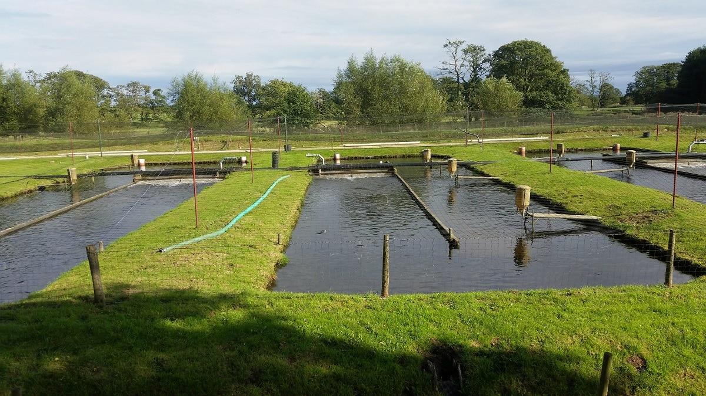

Eco-friendly aquaculture promotes sustainable fish and seafood farming practices that minimize environmental impact. It focuses on reducing waste, conserving water, and using natural methods to maintain healthy aquatic ecosystems.
By adopting modern techniques and traditional knowledge, eco-friendly aquaculture supports biodiversity, reduces the reliance on chemical inputs, and ensures a sustainable source of food for future generations.
